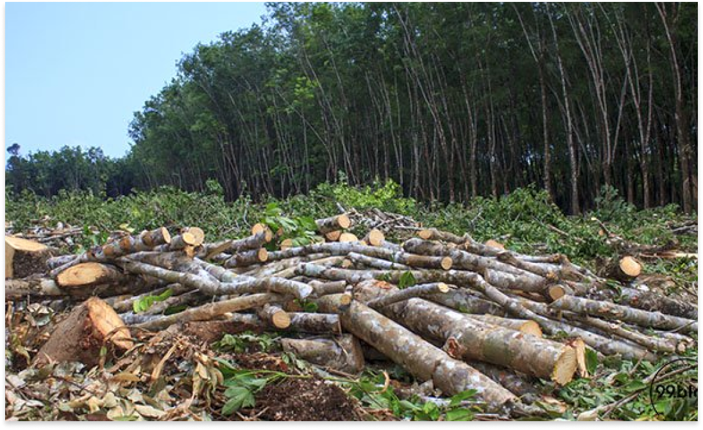
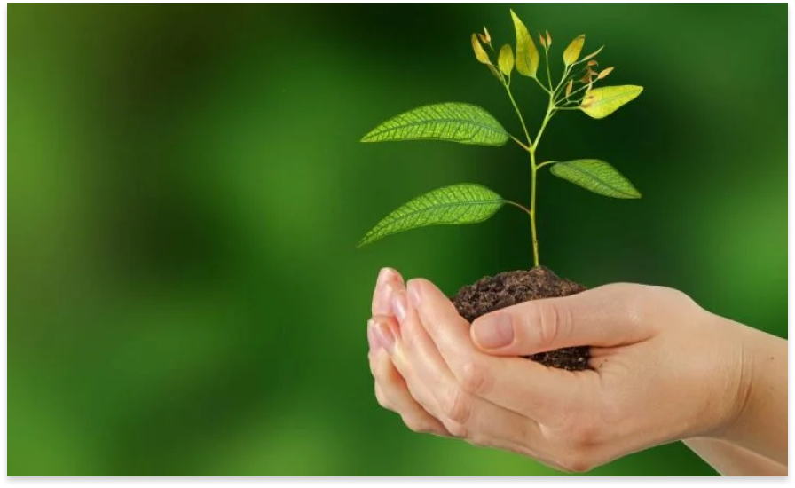

Berita dan Artikel / Kalender Acara / Berita
Hari Menanam Pohon Indonesia, Selamatkan Rumah Kita Dari Sekarang!
Oleh : Bobby Agung Prasetyo | 4 Sep’ 2020
JAKARTA, 2 SEPTEMBER 2020. Hari Menanam Pohon Indonesia jatuh pada tanggal 28 November. Sebuah
inisiasi yang perlu dilakukan, mengingat kondisi hutan negara kita sudah parah! Bagaimana
caranya? Yuk, sama-sama memahami persoalan negara yang satu ini sebagai berikut…
Sahabat
99,
tahukah kamu bahwa deforestasi alias penebangan hutan di negara kita sudah sangat parah?
Belum
lagi problematika lain seperti kebakaran hutan, pembukaan lahan untuk berbagai macam keperluan,
hingga pembangunan infrastruktur setempat?
Meski terkesan sepele, namun kondisi ini
mampu
berdampak buruk untuk aspek sosial dan ekonomi bagi masyarakat.
Beberapa studi telah
menunjukkan
bahwa kerusakan hutan di Indonesia turut menyumbang perubahan iklim dunia.
Bahkan,
Indonesia
masuk dalam urutan tiga besar penghasil emisi terbesar gas rumah kaca setelah Amerika Serikat
dan China!
Otomatis, inisiasi Hari Menanam Pohon dilakukan agar pemukiman dan lingkungan
kita
jadi lebih baik.enindaklanjuti hasil temuan Inspektorat Jenderal KLHK terkait PKS antara Balai
KSDA Kalimantan Selatan dengan PT. Indocement Tunggal Prakarsa, Tbk. (PT ITP) dalam rangka tukar
menukar sebagian kawasan Cagar Alam di Kabupaten Kotabaru berupa Pembangunan Hutan Penelitian
dan Pembangunan Penangkaran Satwa yang Dilindungi, pada tanggal 2 September 2020 Kepala Balai
KSDA Kalimantan Selatan Dr. Ir. Mahrus Aryadi, M. Sc didampingi KSBTU Suwandi, S.Hut., M.A,
Ka.SKW III Batulicin Nikmat Hakim Pasaribu, S.P., M.Sc, dan Kepala Resort CA Teluk Kelumpang
Ahmad Nabawi beserta Tim melaksanakan peninjauan lapangan ke PT.ITP. Kunjungan tersebut diterima
oleh tim dari PT.ITP Boby Wardhana, Yulizar, Agus Rifani dan I Wayan Kedep.
Hari Menanam Pohon Indonesia dan Dampaknya buat Lingkungan
1. Rumah KebanjiranSalah satu fungsi hutan adalah menyerap dengan cepat dan menyimpan air dalam jumlah yang banyak ketika hujan lebat terjadi. Namun ketika hutannya gundul, tak ada yang sanggup menyerap air. Hal tersebut membuat aliran air hujan terganggu dan menciptakan genangan hujan, lalu banjir… Sampai akhirnya mengalir ke pemukiman penduduk. Ketika banjir masuk ke dalam rumahmu, tentu semuanya bakal terasa repot! Itulah sebabnya, Hari Menanam Pohon Indonesia dapat menyelamatkan rumahmu dari bencana.
2. Sumber Daya Air Turun
Melalui akarnya, pohon menyerap air yang dialirkan ke daun, menguap, lantas dilepaskan ke lapisan atmosfer. Ketika pohon-pohon ditebang, daerah tersebut menjadi gersang dan tak ada lagi yang membantu tanah menyerap lebih banyak air Hal tersebut menyebabkan penurunan sumber daya air. Tahu ‘kan Urbanites, apa yang terjadi setelahnya? Ya, kamu akan sulit mendapatkan air. Sementara itu, air betul-betul menjadi penumpu kebutuhan rumah tangga… Mulai dari air minum, mandi, mencuci baju serta peralatan tertentu, dan lain-lain. Repot juga, ya!
3. Tanah Gersang dan Sulit Dijadikan Lahan Tanaman
Tak adanya pepohonan menyebabkan tanah menyerap sinar matahari terlalu banyak sehingga menjadi sangat kering dan gersang. Selain itu, hujan bisa menyapu sisa-sisa nutrisi dari tanah. Ketika hal ini terjadi, maka kemungkinan terburuknya adalah tanah tersebut sulit dijadikan lahan bagi mereka yang hobi bercocok tanam. 
Menyelamatkan Hutan Indonesia dari Sekarang
Bayangkan Sahabat 99, apa jadinya kalau kamu tidak ada tanaman sama sekali di sekitar hunian? Sekalipun tidak suka bertanam, namun sulit rasanya ketika manusia hidup tanpa didukung oleh lingkungan hijau. Lalu bagaimana dengan banjir dan tanah sumber daya air yang nihil di sekitar tempat tinggalmu? Jangan sampai hal ini terjadi, ya! Yuk, sama-sama lestarikan lingkungan sekitar dengan mendukung gerakan Hari Menanam Pohon Sedunia.